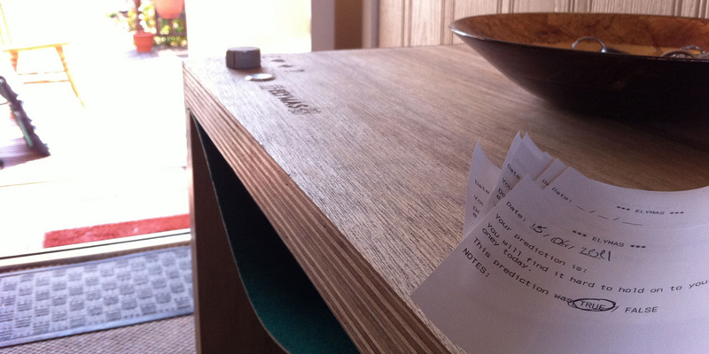

The Elymas table is a handcrafted side table that can offer you a small, indefinite glimpse into your future. The premise of the Elymas table is simple. Turn the dial to your desired category, press the button, and receive a small piece of paper with a brief prophecy on it. Read it and take it in, does it reassure or warn you? The table’s stark power is belied by the utilitarian functionalism of its design. The beauty of this table is that anyone can use it; it simply requires a small level of thought and contemplation.